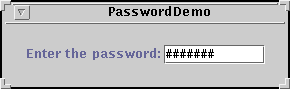

Feedback Form
|
|
Start of Tutorial > Start of Trail > Start of Lesson |
Search
Feedback Form |
TheJPasswordFieldclass, a subclass of
JTextField, provides text fields specialized for password entry. For security reasons, a password field doesn't show the characters the user types. Instead, the field displays another character such as an asterisk '*'. As another security precaution, a password field stores its value as an array of characters, rather than as a string. Like an ordinary text field, a password field fires an action eventwhen the user indicates that text entry is complete, such as by pressing the Enter button.
Here's a picture of a demo that brings up a small window and prompts the user to type in a password.
 [PENDING: This snapshot needs to be updated. In addition to having a different look, the program now has two buttons — an OK button and a HELP button.]You can run PasswordDemo using JavaTM Web Start
PasswordDemo.java. Here's the code that creates and sets up the password field:
The argument passed into thepasswordField = new JPasswordField(10); passwordField.setEchoChar('#'); passwordField.setActionCommand(OK); passwordField.addActionListener(this);JPasswordFieldconstructor indicates the preferred size of the field — at least 10 columns wide, in this case. By default a password field displays an asterisk '*' for each character typed. The call tosetEchoCharchanges it to a pound sign '#'. Finally, the code adds an action listener to the password field, which checks the value typed in by the user. Here's the implementation of the action listener'sactionPerformedmethod:public void actionPerformed(ActionEvent e) { String cmd = e.getActionCommand(); if (OK.equals(cmd)) { //Process the password. char[] input = passwordField.getPassword(); if (isPasswordCorrect(input)) { JOptionPane.showMessageDialog(controllingFrame, "Success! You typed the right password."); } else { JOptionPane.showMessageDialog(controllingFrame, "Invalid password. Try again.", "Error Message", JOptionPane.ERROR_MESSAGE); } //Zero out the possible password, for security. for (int i = 0; i < input.length; i++) { input[i] = 0; } passwordField.selectAll(); resetFocus(); } else ...//handle the Help button... }
Security note: Although theJPasswordFieldclass inherits thegetTextmethod, you should use thegetPasswordmethod instead. Not only isgetTextless secure, but in the future it might return the visible string (for example,"******") instead of the typed-in string.To further enhance security, once you are finished with the character array returned by
getPassword, you should set each of its elements to zero. The preceding code snippet shows how to do this.A program using a password field typically validates the password before completing any actions requiring the password. This program calls a private method,
isPasswordCorrect, that compares the value returned bygetPasswordto a value stored in a character array. Here is its code:private static boolean isPasswordCorrect(char[] input) { boolean isCorrect = true; char[] correctPassword = { 'b', 'u', 'g', 'a', 'b', 'o', 'o' }; if (input.length != correctPassword.length) { isCorrect = false; } else { for (int i = 0; i < input.length; i++) { if (input[i] != correctPassword[i]) { isCorrect = false; } } } //Zero out the password. for (int i = 0; i < correctPassword.length; i++) { correctPassword[i] = 0; } return isCorrect; }
The following tables list the commonly usedJPasswordFieldconstructors and methods. For information on the API password fields inherit, see How to Use Text Fields.
Commonly Used JPasswordField Constructors and Methods Constructor or Method Purpose JPasswordField()
JPasswordField(String)
JPasswordField(String, int)
JPasswordField(int)
JPasswordField(Document, String, int)Create a password field. When present, the intargument specifies the desired width in columns. TheStringargument contains the field's initial text. TheDocumentargument provides a custom model for the field.char[] getPassword()Set or get the text displayed by the password field. void setEchoChar(char)
char getEchoChar()Set or get the echo character — the character displayed instead of the actual characters typed by the user. void addActionListener(ActionListener)
void removeActionListener(ActionListener)
(defined inJTextField)Add or remove an action listener. void selectAll()
(defined inJTextComponent)Select all characters in the password field.
PasswordDemo is the Tutorial's only example that uses aJPasswordFieldobject. However, the Tutorial has many examples that useJTextFields, whose API is inherited byJPasswordField. See Examples that Use Text Fields for further information.
|
|
Start of Tutorial > Start of Trail > Start of Lesson |
Search
Feedback Form |
Copyright 1995-2004 Sun Microsystems, Inc. All rights reserved.